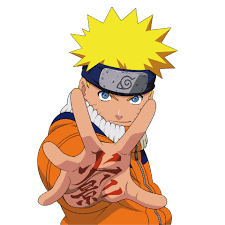
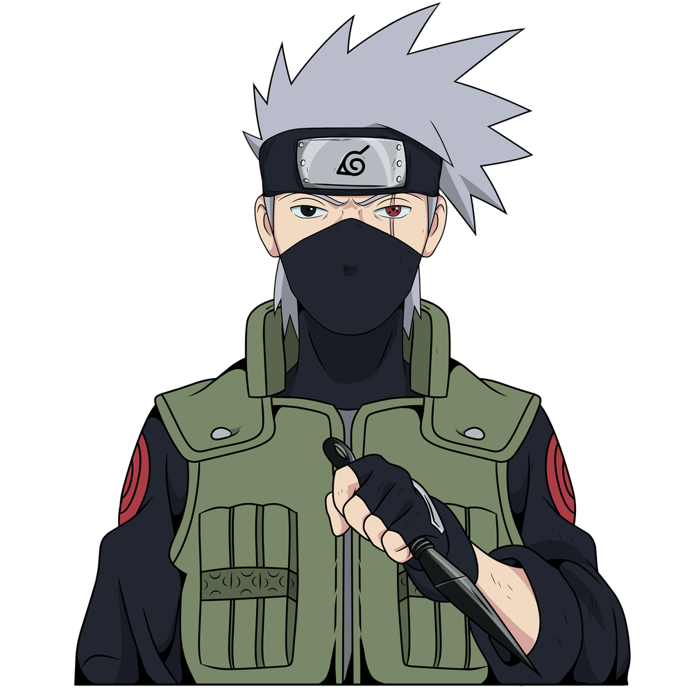

Welcome to the World of Naruto
Naruto is a Japanese manga series written and illustrated by Masashi Kishimoto. It tells the story of Naruto Uzumaki, a young ninja who seeks recognition from his peers and dreams of becoming the Hokage, the leader of his village.

Main Characters

Naruto Uzumaki
Naruto is a ninja-in-training whose wild antics amuse his teammates. But he's completely serious about one thing: becoming the world's greatest ninja.

Sasuke Uchiha
Sasuke is Naruto's rival and a member of the Uchiha clan. He is a skilled ninja with a complex background and a strong desire for power.

Sakura Haruno
Sakura is a determined and compassionate ninja. She is known for her strength and medical ninjutsu skills.

Kakashi Hatake
Kakashi is the leader of Team 7 and a highly skilled ninja. He is known for his calm demeanor and his Sharingan eye.